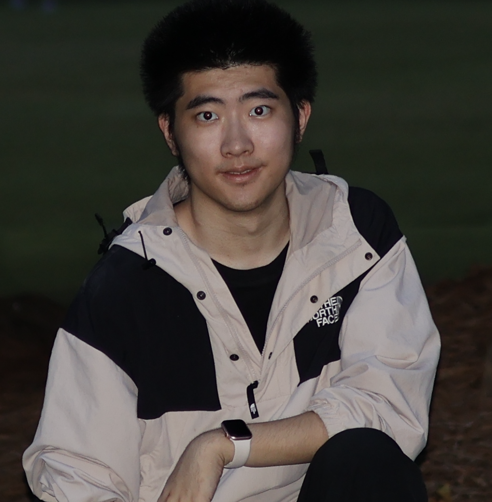

Xiangbo Zhang
I am an undergraduate student in Mathematics at the Georgia Institute of Technology.
My research interests lie at the intersection of machine learning, language model behavior, and robust control for nonlinear systems. In particular, I am highly interested in building safe, aligned, and fair large language models, and in understanding their behavior through principled and interpretable approaches.
I enjoy developing theory-driven machine learning systems and connecting mathematical foundations—such as optimization, control, and statistical reasoning—with practical, deployable ML systems. My current work focuses on interpretable and reliable learning pipelines, multi-agent LLM systems, and evaluation frameworks for robustness, alignment, and fairness.
Open to research collaborations and academic discussions, please feel free to send me one email.
Publications
-
Input-Envelope-Output: Auditable Generative Music Rewards in Sensory-Sensitive Contexts. Ye, Q., Sang, S., Ma, X., Zhang, X. CHI 2026 (Accepted).
-
Frequency-Aware Sparse Capsule Networks for Hyperspectral Image Classification. Wang, J., Liu, Q., Gao, Z., Zhang, X., Dou, Z., Belal Abuhaija, Huang, K. Cognitive Computation, 2026 (Under Review).
-
Memory Dial: A Training Framework for Controllable Memorization in Language Models. Zhang, X., Emami, A. ACL ARR 2026.
-
Stable and Explainable Personality Trait Evaluation in Large Language Models with Internal Activations. Ma, X., Zhang, X., Weng, Z. ACL ARR 2026.
-
UniHash: Unifying Pointwise and Pairwise Hashing Paradigms. Ma, X., Li, R., Liu, H., Zhang, X., Weng, Z. ICML 2026 (Under Review) [arXiv].
-
Discrete Wavelet Transform-Based Capsule Network for Hyperspectral Image Classification. Gao, Z., Wang, J., Shen, H., Dou, Z., Zhang, X., Huang, K. arXiv 2025 [arXiv].
-
Global Output Regulation for Uncertain Feedforward Nonlinear Systems with Unknown Nonlinear Growth Rate. Chang, L., Zhang, X. IJRNC 2025 [Paper].
-
State-Feedback Control of a Class of Nonlinear Systems with Neutral Delays. Zhang, X. CSIS-IAC 2024 [Paper].
Service
Reviewer, ACL ARR 2026
Teaching Assistant, MATH 1010 Foundations of Math, Kean University (Summer 2024)
STME Tutor, Educational Opportunity Fund Program, Kean University (2024-2025)
Math Tutor, Department of Mathematical Sciences, Kean University (2025)
Equity, Access, and Community
I strongly support the principles of Diversity, Equity, and Inclusion.
I come from a resource-limited background, where access to research training and academic mentorship was often scarce. My opportunity to pursue higher education and research in the United States has been made possible through scholarships and institutional support, which I deeply value.
These experiences have shaped my understanding that talent is widely distributed, while opportunity is not. I am especially happy to engage with and support students and researchers from underrepresented or less-resourced backgrounds, and to discuss practical paths toward academic and research success.